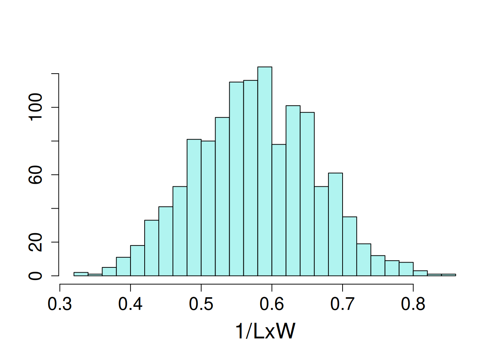
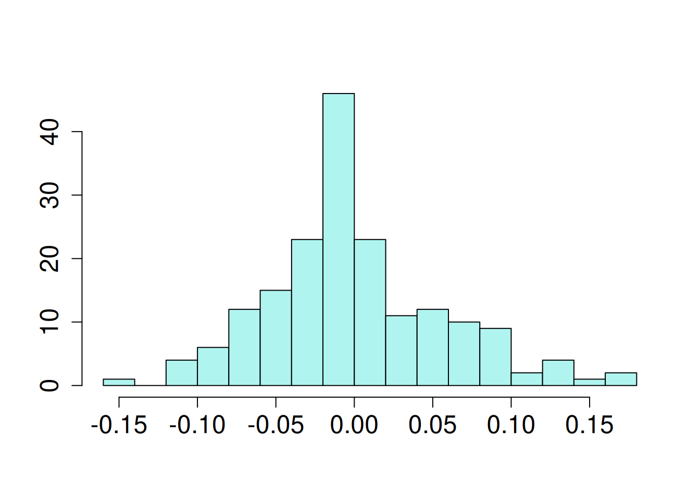
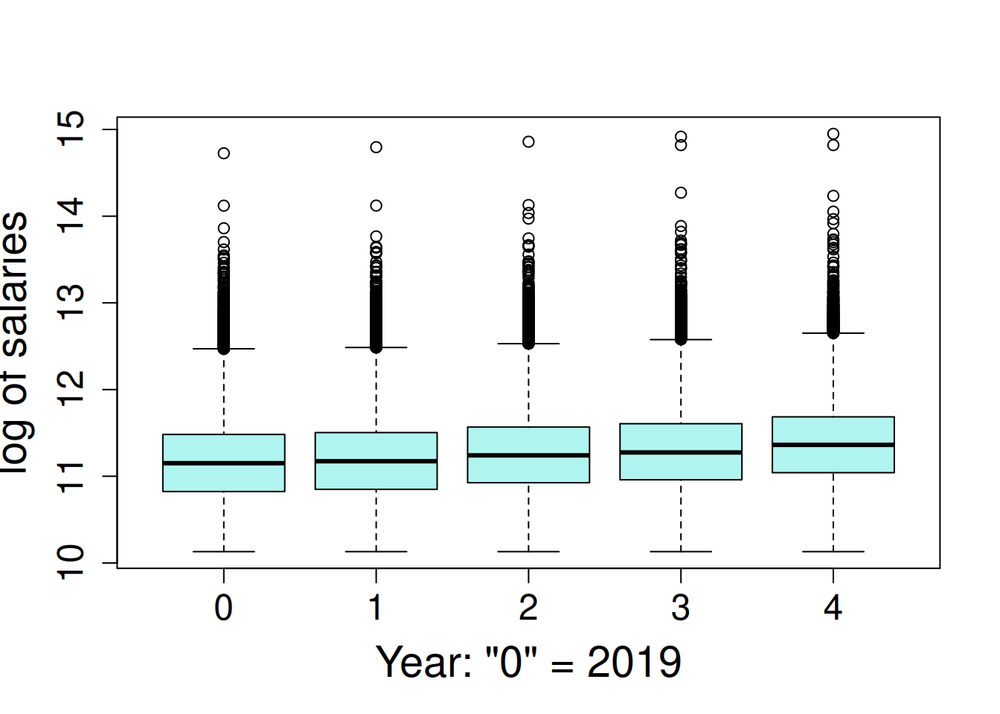
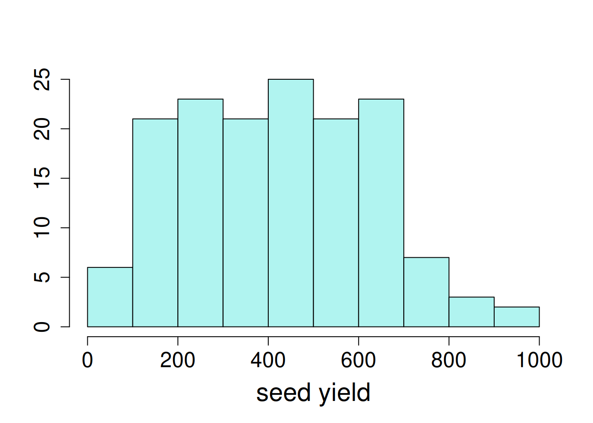
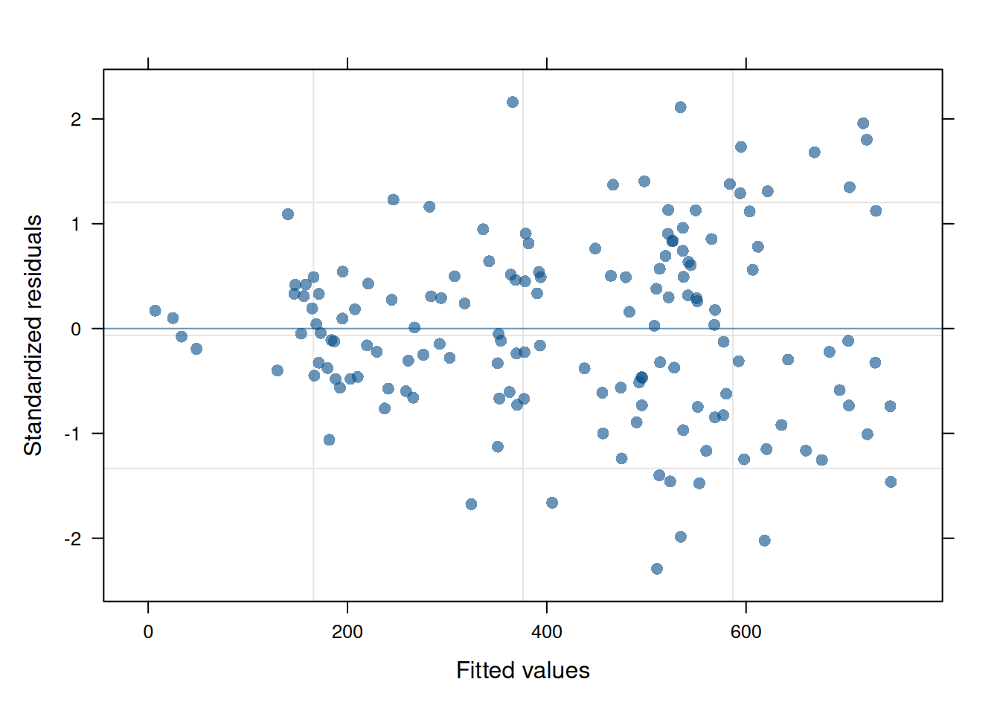

potato <- read.csv(here::here("data", "potato_tuber_size.csv"))14 Variance & Variance Components
Mixed, hierarchical or multilevel models provide the advantage of being able to estimate the variance of random variables and model correlations within the grouping structure of random variables. Instead of looking at a variable as a collection of specific levels to estimate, random effects view variables as being a random draw from a probability distribution.
The decision of how to designate a variable as random or fixed depends on (1) your experimental aims with regard to inference and (2) your data structure. 1 There is a philosophical consider and practical consideration. The philosophical approach is that random variable represents a small sample of a population you want to make inference on. The practical consideration is that when there are few sample levels, the random estimation procedure is not very reliable for those conditions. Ben Bolker has an excellent summary that we strongly recommend that you read to learn more about this. Below is an excerpt from that on the consequences of too few levels to estimate a random effect:
1 This animation show how accounting for grouping structure as random effects can impact the results of a linear model.
Treating factors with small numbers of levels as random will in the best case lead to very small and/or imprecise estimates of random effects; in the worst case it will lead to various numerical difficulties such as lack of convergence, zero variance estimates, etc.. (A small simulation exercise shows that at least the estimates of the standard deviation are downwardly biased in this case; it’s not clear whether/how this bias would affect the point estimates of fixed effects or their estimated confidence intervals.) In the classical method-of-moments approach these problems may not arise (because the sums of squares are always well defined as long as there are at least two units), but the underlying problems of lack of power are there nevertheless.
14.1 Variance component estimation for 2 or more random effects
14.1.1 Multiple crossed variance components
This is a common scenario: an experiment is conducted and there are multiple grouping levels, none of which are nested within each other, but the observations have multiple group memberships. A common example is a multi-environmental trial where multiple crop genotypes are evaluated at multiple locations and years. We can consider genotypes, locations and years as random effects depending on our experimental aims. Very few R packages can handle crossed random effects, but lme4 can!
The data used in this example is a collection of potato field trials conducted across 3 locations and 17 years. Each year, the same potato clones2 are evaluated across all 3 locations, but each year, different clones are evaluated. Some clones are evaluted for multiple years, and a small number are evaluted each year. These potato clones were evaluated for the length-to-width ratio (LxW). We want to know how much location, year and clone contribute to this trait.
2 A clone is a genetically distinct potato genotype that is vegetatively propagated. It may be a released variety or an experimental breeding line
| year | year of trial, 16 levels |
| state | location of trial, 3 levels |
| clone | potato genotype |
| LxW | length-to-width ratio |
Number of observations for each location and year:
addmargins(table(potato$year, potato$state))
ID OR WA Sum
2005 30 30 30 90
2006 30 30 30 90
2007 29 29 29 87
2008 25 25 25 75
2009 16 17 17 50
2010 28 28 28 84
2011 18 24 26 68
2012 30 32 32 94
2013 24 25 25 74
2014 33 33 33 99
2015 29 31 31 91
2016 25 25 25 75
2017 18 21 22 61
2018 25 25 25 75
2019 22 23 23 68
2020 23 24 24 71
Sum 405 422 425 1252Total number of clones evaluated:
length(unique(potato$clone))[1] 181Total counts for how often invividual clones were evaluated:
potato |> count(clone, name = "Frequency of Evaluation") |> count(`Frequency of Evaluation`, name = "No. of Clones") Frequency of Evaluation No. of Clones
1 2 4
2 3 92
3 4 1
4 6 30
5 8 2
6 9 20
7 10 1
8 11 2
9 12 11
10 13 1
11 14 4
12 15 8
13 16 1
14 17 1
15 18 1
16 91 1
17 93 1The dependent variable, LxW or length-to-width ratio, distribution had a slight left skew, so the the inverse of this trait was modelled.
hist(1/potato$LxW, ylab=NULL, xlab = NULL, main = NA, breaks = 20)
14.1.1.1 Model fitting
For this analysis, location (“state”) is a fixed effect because it only has 3 levels, and the researchers are only interested in understanding clone performance in those locations (Idaho, Oregon and Washington). The remaining effects are random because (1) they represent a sample of the full population that inference is desired for, and (2) each has a sufficient number of levels to make estimation feasible.
The statistical model:
\[ y_{ijk} = \mu + \alpha_i + b_j + (\alpha\beta)_{ij} + \gamma_k + \epsilon_{ijk}\]
\(\mu\) = model intercept
\(\alpha_i\) = fixed effect of state (3 levels)
\(\beta_j\) = random effect of year (16 levels)
\((\alpha\beta)_{ij}\) = random effect of state-by-year interaction (48 levels)
\(\gamma_k\) = random effect of clone (181 levels)
\(\epsilon_{ijkl}\) = error term
The error terms and all random effects are normally distributed with a mean of zero and a given variance for each term:
\[ \epsilon \sim \mathcal{N}(0, \sigma^2) \]
\[ \beta \sim \mathcal{N}(0, \sigma^2_b) \] \[ (\alpha\beta) \sim \mathcal{N}(0, \sigma^2_a) \]
\[ \gamma \sim \mathcal{N}(0, \sigma^2_g) \]
The lme4 syntax:
potato_m1 <- lmer((1/LxW) ~ state + (1|year) + (1|state:year) + (1|clone),
data = potato)Model assumption evaluation:
performance::check_model(potato_m1, check = c('qq', 'linearity', 'reqq'), detrend=FALSE, alpha = 0)
14.1.1.2 Inference on random effects
Marginal means of fixed effects can be visualized as demonstrated in previous chapters (e.g. .
The variance components for each random effect can be extracted most easily using the tidy() function from broom.mixed. We can also a bit of extra code to calculate the percent of variance explained by each component.
var_comps <- tidy(potato_m1, "ran_pars", scales = "vcov") |>
dplyr::select(group, variance = "estimate") |>
mutate(`percent variance` = round(variance/sum(variance) * 100, 1))
var_comps# A tibble: 4 × 3
group variance `percent variance`
<chr> <dbl> <dbl>
1 clone 0.00344 61.6
2 state:year 0.000468 8.4
3 year 0.000301 5.4
4 Residual 0.00138 24.6This is a naive method to estimate relative variance components; in particular, heritablity estimates should also take into account the number of locations and year.
::: note-information, collapse=false ## log likelihood ratio tests ANOVA as classically defined (F-tests contrasting the between group and within group variation) is not an option for evaluating random effects. There are several ways to test if random effects are impactful on the model overall. One of the most reliable and popular methods is the log likelihood ratio test. In brief, a reduced model is refit from a full specified model omitting a random variable. The log likelihood from the two models (the fully specified and reduced models) are compared, and a p-value is computed for that difference given the change in number of parameters estimated. The null hypothesis is that the models are equivalent and the alternative hypothesis is that the models are not equivalent. Hence, low p-values provide evidence that the omitted factor is impactful on the dependent variable of interest.
:::
The function ranova() in lmerTest conducts log-likelihood ratio tests for all random effects in a model.3
3 It is also possible to conduct likelihood tests manually by constructing reduced models and comparing it to the fully specificed (or more specified) model. In such cases, the fixed effects need to be identical between models, and they need to be fit using maximimun likelihood instead of REML.
ranova(potato_m1)ANOVA-like table for random-effects: Single term deletions
Model:
(1/LxW) ~ state + (1 | year) + (1 | state:year) + (1 | clone)
npar logLik AIC LRT Df Pr(>Chisq)
<none> 7 2041.9 -4069.7
(1 | year) 6 2039.3 -4066.7 5.07 1 0.02436 *
(1 | state:year) 6 1953.7 -3895.4 176.34 1 < 2e-16 ***
(1 | clone) 6 1477.3 -2942.7 1129.03 1 < 2e-16 ***
---
Signif. codes: 0 '***' 0.001 '**' 0.01 '*' 0.05 '.' 0.1 ' ' 1It is possible to make inferences on specific levels of random effects. This take a different analytical approach than fixed effects and has a different term, predictions, or more specifically Best Linear Unbiased Predictions, commonly called “BLUPs” (rhymes with “cups”). The estimated marginal means from fixed effects are technically BLUEs, or Best Linear Unbiased Estimates. By their nature, BLUPs “shrink” the estimates towards zero, reducing their overall spread compared to fixed effects. VSNi has a short summary on BLUPs and BLUEs.
Recall that random effects are distributed with a mean of zero and a standard deviation, \(\sigma_x\) that is estimated in the model fitting procedure. We can add the overall model intercept to all BLUPs in order to shift them to a scale that may be more intuitive for some. Since this constant (the model intercept) was added to all BLUPs, the overall relationship between the them (in this example, potato clones) is unchanged.
# the model intercept
intercept = fixef(potato_m1)[1]
# all random effects from the model
random_effects <- REextract(potato_m1)
# filter to clone BLUPs and add the intercept
clone_re <- filter(random_effects, groupFctr == "clone") |>
rename(clone = groupID, BLUP = "(Intercept)", SE = "(Intercept)_se") |>
mutate(blup_adj = BLUP + intercept)
Below are the BLUPs (in red) and standard errors for each clone, arranged from lowest to highest length-to-width ratio. The horizontal gray dotted line indicates the average clone effect.
ggplot(clone_re, aes(x = reorder(clone, blup_adj), y = blup_adj)) +
geom_hline(yintercept = intercept, color = "gray", linetype = 2) +
geom_linerange(aes(ymax = blup_adj + SE, ymin = blup_adj - SE)) +
geom_point(size = 0.7, col = "violetred1") +
theme_classic(base_size = 14) +
ggtitle("length-to-width ratio") +
ylab("BLUP + intercept") +
theme(axis.text.x = element_blank(),
axis.ticks.x = element_blank(),
axis.title.x = element_blank())14.1.2 Nested variance components
It is possible to have a nested data set: learners in a classroom and classrooms in institutions, cows in dairies and dairies in counties or other regional indicators. These end up being truly hierarchical models, where we expect that there is some covariance between observations at the different levels. Cows in the same dairy are likely to be more correlated with each other than cows from another dairy. But how correlated? And how much does each grouping level influence the variation of whatever dependent variable is being studied.
This example is looking at pay at institutions of higher education in Washington. All annual earnings less than $25,000 were excluded from the data set, and only earners with a minimum of four years of data were included. Although this is public information, all individual names were anonymized.4
4 This data set (source) was incompletely curated and hence no substantive conclusions should be drawn from this particular analysis. This example is for teaching and demonstration purposes only.
For this example analysis, our interest is in understanding how much salarie vary within and across Washington State higher educational institutions. In particulr, to what extent did year, the institution itself and the individual employee contribute to salary changes over time. This is an example where we will use random slopes to examine how an individual’s salary changed over time. The data set:
| agency | educational institution, 36 levels |
| id | anonymized employee within each agency, 46,164 levels |
| salary | annual salary, continuous |
| year | year of salary, set to {0, 1,…4} for {2019, 2020,.. 2023 } |
This is a rather large data set (218,040 rows), and it requires quite a bit of computing power to analyze. Hence, the analysis was done locally, and the data set and model object were saved as a .RData file. Now let’s load this object into an R session.
load(here::here("data/salary_modeldata.RData"))There is a large number of individuals in this data set.
Total individuals:
wa_salary |> distinct(agency, id) |> summarise(N = n())# A tibble: 1 × 1
N
<int>
1 46164The number of employees per institution ranged dramatically from 107 to 26,568 employees.
wa_salary |> group_by(agency) |> distinct(id) |>
summarise(N = n()) |> ungroup() |> arrange(N) |> print(n = 36)# A tibble: 36 × 2
agency N
<chr> <int>
1 Grays Harbor College 107
2 Big Bend Community College 116
3 Cascadia Community College 132
4 Peninsula Community College 145
5 Bellingham Technical College 163
6 Bates Technical College 196
7 Centralia College 202
8 Wenatchee Valley College 209
9 Renton Technical College 214
10 Lake Washington Technical College 223
11 Clover Park Technical College 240
12 Whatcom Community College 243
13 Skagit Valley College 249
14 Walla Walla Community College 254
15 Lower Columbia Community College 278
16 South Puget Sound Community College 301
17 Yakima Valley College 306
18 Olympic College 332
19 Shoreline Community College 337
20 Columbia Basin Community College 345
21 Everett Community College 391
22 Tacoma Community College 424
23 The Evergreen State College 447
24 Green River Community College 460
25 Highline Community College 474
26 Pierce Community College 501
27 Edmonds Community College 525
28 Clark College 539
29 Bellevue Community College 645
30 Spokane Community College 886
31 Eastern Washington University 981
32 Seattle Community College 1098
33 Central Washington University 1174
34 Western Washington University 1691
35 Washington State University 4768
36 University of Washington 2656814.1.2.1 Model fitting
Salary is very skewed, where the 70% of salaries are less than $100,000, but there are a few very high salaries, up to a maximum value of $3.1 million. In this analysis, the data are log transformed for a log-linear model. This is a special case of generalized linear mixed model (GLMM); log-linear model follow the assumption of normally-distributed residuals terms when the dependent variable is log-transformed. The salaries are observed to increase a small amount each year.
hist(log(wa_salary$salary), ylab=NULL, xlab = NULL, main = "Washington Higher Ed Salaries")
boxplot(log(salary) ~ year, data = wa_salary, ylab=NULL, xlab = NULL, main = "Salaries by Year")
The analysis is derived from this model where random intercepts and slopes were fit for institution and individuals nested within institution.
\[ Y_{ijkl} = (\beta_0 + r1_j) + (\beta_1 + r2_j)X_{ij} + \epsilon_{ijkl}\]
\[Y_{ijkl} = \mu + \alpha_i + \beta_j + \gamma_k + \delta_jX_{ij} + \zeta_kX_{ik} + \epsilon_{ijkl}\] \(\mu\) = model intercept
\(\alpha_i\) = fixed effect of year (5 levels, treated as categorical)
\(\beta_j\) = random intercept of institution (36 levels)
\(\gamma_k\) = random intercept of individual nested within institution (46164 total levels)
\(\delta_j\) = random slope of change over years for each institution
\(\zeta_k\) = random slope of change over years for each individual
\(\epsilon_{ijkl}\) = error term
R LMM Syntax
Run the model:
m1 <- lmer(log(salary) ~ factor(year) + (year|agency/id),
data = wa_salary, REML = FALSE)Due to the size of the data set, we cannot display the residual plot because it takes too long to render.
Obtain the BLUPs:
random_effects <- REextract(m1)Save all object to file for later usage:
save(m1, wa_salary, random_effects, file = here::here("data", "salary_modeldata.RData"))14.1.2.2 Inference
14.1.2.2.1 1. Variance Components
VarCorr(m1) Groups Name Std.Dev. Corr
id:agency (Intercept) 0.473969
year 0.079368 -0.368
agency (Intercept) 0.087550
year 0.016624 -0.674
Residual 0.158676 var_comps_salary <- tidy(m1, "ran_pars", scales = "vcov") |>
filter(grepl("^var.*", term)) |>
dplyr::select(group, term, variance = "estimate") |>
mutate(`percent variance` = round(variance/sum(variance) * 100, 1))
var_comps_salary# A tibble: 5 × 4
group term variance `percent variance`
<chr> <chr> <dbl> <dbl>
1 id:agency var__(Intercept) 0.225 85.1
2 id:agency var__year 0.00630 2.4
3 agency var__(Intercept) 0.00767 2.9
4 agency var__year 0.000276 0.1
5 Residual var__Observation 0.0252 9.514.1.2.2.2 2. BLUPs
# the model intercept
intercept = fixef(m1)[1]
# all random effects from the model
random_effects <- REextract(m1)14.1.2.2.3 3. Visualize Random Effects
(intercepts and slopes)
- Filter BLUPs to a single factor, “agency” (i.e. institute of higher education).
agency_re <- filter(random_effects, groupFctr == "agency") |>
rename(Institution = groupID, BLUP = "(Intercept)", SE = "(Intercept)_se") |>
mutate(blup_adj = BLUP + intercept) |>
mutate(`salary slope` = ifelse(year > 0, "+", "-"))- Plot Salaries by Institution:
ggplot(agency_re, aes(x = reorder(Institution, blup_adj), y = blup_adj)) +
geom_hline(yintercept = intercept, color = "gray", linetype = 2) +
geom_linerange(aes(ymax = blup_adj + SE, ymin = blup_adj - SE)) +
geom_point(size = 3, col = "violetred", shape = 18, alpha = 0.6) +
labs(title = "Institutional Salaries, 2019 - 2024", subtitle = "Log of Salaries") +
ylab("BLUP + mean and standard error") +
theme_classic(base_size = 14) +
theme(axis.text.x = element_blank(),
axis.ticks.x = element_blank(),
axis.title.x = element_blank())- Plot Salary Changes by Institution:
ggplot(agency_re) + # need sequence -0.4 to 0.4
geom_abline(aes(slope = year, intercept = blup_adj, col = `salary slope`), alpha = 0.7, linewidth = 0.75) +
geom_hline(yintercept = intercept, color = "black", linetype = 2) +
labs(title = "Changes in Institutional Salaries, 2019 - 2024", subtitle = "Log of Salaries") +
xlim(c(0, 4)) +
ylim(c(10.75, 11.3)) +
scale_color_manual(values = c("springgreen3", "violetred")) +
#ylim(c(-0.25, 0.3)) +
ylab("log salary") + xlab("year") +
theme_bw(base_size = 14) +
theme(legend.position = c(0.98, 0.98),
legend.justification = c(1,1),
legend.background = element_rect(color = "gray60", fill = rgb(1, 1, 1, alpha = 0.8)),
legend.key = element_rect(fill = "transparent"))
- Examine Relationship Between Employee Salary and Changes in Salary:
person_re <- filter(random_effects, groupFctr == "id:agency") |>
rename(employee = groupID, BLUP = "(Intercept)", SE = "(Intercept)_se") |>
mutate(blup_adj = BLUP + intercept) |>
mutate(`salary slope` = ifelse(year > 0, "+", "-"))ggplot(person_re, aes(x = BLUP, y = year)) +
geom_point(alpha = 0.4, color = "royalblue") +
geom_hline(yintercept = 0, col = "black", linetype = 2) +
geom_vline(xintercept = 0, col = "black", linetype = 2) +
labs(title = "Changes in Employee Salaries, 2019 - 2024", subtitle = "(Log of Salaries)") +
xlab("random intercept (BLUP) for Employee Salary") +
ylab("random slope for Employee salary increase") +
theme_bw()
This plot illustrates the negative correlation between employee salary and employee salary change indicated by the VarCorr(m1) output.
There are other functions in merTools to explore random effects and variances from an lme4 analysis.
14.2 Variance estimation under heteroscedasticity
In the “general” linear model days, when a premium was placed on the i.i.d. error paradigm, if we did reject \(H_0\), it would set off a minor crisis in the form of a hunt for a variance stabilizing transformation. In contemporary modeling, we simply proceed with inference on estimable functions using the equal variance model.
– Walt Stroup, Marina Ptukhiuna and Julie Garai (2024), Generalized Linear Mixed Models, 2nd Ed, Section 7.2.3.1
In previous sections, we have assumed the error terms or residuals were “i.i.d.”, that is “independently and identically distributed. This means they were shared the same distribution (identical) and were uncorrelated (independent). Longitudinal studies, that is, those with repeated measures, do have correlated residuals, so we relax the independence assumption and model those correlations. However, residuals can be unexpectedly related to the their observations, particular treatments or the order data was gathered from the experimental units (among other causes). As mentioned in the previous quote, we now have tools for handling this rather than trying to transform the data. Below are examples on how to model heteroscedasticity.
14.2.1 Case 1: Unequal variance due to a factor
This data set is a set of canola variety trials conducted within a single year across multiple locations. The trials consist of 38 canola varieties that were evaluated at 9 locations using a RCB design. The goal is to estimate varietal performance at each location as precisely as possible.
var_ex1 <- read.csv(here::here("data", "MET_trial_variance.csv")) |>
mutate(block = as.character(block)) #|> tidyr::drop_na()| site | location of trial, 9 levels |
| block | within trial replication, 4 levels |
| variety | canola genotype |
| yield | oilseed yield |
Exploratory data visualizations indicate that the dependent variable, seed yield, varied greatly overall, and certain locations had noticeably smaller variance compared to others.
hist(var_ex1$yield, main=NA)
boxplot(yield ~ site, data = var_ex1)
14.2.1.1 Model Fitting
This is a fully crossed design; all varieties were evaluated at all sites, but there is missing data, as is common in agricultural field trials. For this analysis, variety and variety-by-site are fixed effects while site and block are random effects.
\[ y_{ijk} = \mu + \alpha_i + \beta_j + (\alpha\beta)_{ij} + \gamma_k + \epsilon_{ijk}\] \(\mu\) = model intercept
\(\alpha_i\) = fixed effect of variety (38 levels)
\(\beta_j\) = random effect of site (9 levels)
\((\alpha\beta)_{ij}\) = fixed effect of variety-by-site interaction (342 levels)
\(\gamma_k\) = random effect of block (36 levels)
\(\epsilon_{ijkl}\) = error term
The error terms and all random effects are normally distributed with a mean of zero and a given variance for each term:
\[ \epsilon \sim \mathcal{N}(0, \sigma^2) \]
\[ \beta \sim \mathcal{N}(0, \sigma^2_b) \] \[ \gamma \sim \mathcal{N}(0, \sigma^2_S) \]
The package nlme contains a relatively straightforward implementation for heteroscedasticity that are illustrated below.
ex1_m1 <- lme(yield ~ site:variety + variety,
random = ~ 1 |site/block,
na.action = na.exclude,
data = var_ex1)The residual plot indicates some association between the residuals and fitted values, violating the i.i.d. model assumption.5
5 Since the focus of this section is on evaluating the homescedasticity assumption, the nlme residual plotting function is used for its simplicity of display.
plot(ex1_m1)
We can add a term to model the variance by site.
\[Var(\epsilon_{ij}) = \sigma^2 \delta^2_{s_{ij}} \] Details on the implementation can be found in (Pinheiro and Bates 2000).
ex1_m2 <- update(ex1_m1, weights = varIdent(form = ~1|site))The function varIdent() is used to set the stratifying variable at which to estimate variance. Like many functions in R, there are additional arguments to consider for more complex scenarios (type ?varIdent in an R console to check).
ex1_m2 <- update(ex1_m1, weights = varIdent(form = ~1|site))is equivalent to
ex1_m2 <- lme(yield ~ site:variety + variety,
random = ~ 1 |site/block,
weights = varIdent(form = ~1|site),
na.action = na.exclude,
data = var_ex1)The residual plot from this updated model is now much cleaner and conforms to expectations.
plot(ex1_m2)
When comparing the models with a log-likelihood ratio test, the model with hetergenous error structure has better fit statistics and is different from the unweighted model (\(p<0.0001\)).
anova(ex1_m1, ex1_m2) Model df AIC BIC logLik Test L.Ratio p-value
ex1_m1 1 345 14814.25 16511.55 -7062.128
ex1_m2 2 353 14489.23 16225.88 -6891.615 1 vs 2 341.0259 <.0001The result is a better-fitting model and with that, better inference for variety at the site level.
While it may be possible to implement heterogenous error structures with lme4, it requires a good working knowledge of that R package.
14.2.2 Case 2: Variance is related to the fitted values
Below is the infamous ‘horn’ pattern in the residuals-vs-fitted values plot. This analysis is from a canola variety trial of 38 cultivars conducted at single location for one field season.
var_ex2 <- read.csv(here::here("data", "single_trial_variance.csv")) |>
dplyr::mutate(block = as.character(block))| block | replication, 4 levels |
| variety | canola genotype, 38 levels |
| yield | oilseed yield |
A histogram does indicate there is anything unusual about the dependent variable (seed yield), except that is varies quite a bit, ranging from 24 to nearly 950 units.

hist(var_ex2$yield)Since this experiment has a single fixed effect and is arranged using a RCBD, the model is same as described in the RCBD chapter.
ex2_m1 <- lme(yield ~ variety,
random = ~ 1 |block,
na.action = na.exclude,
data = var_ex2)An inspection of the residual plot indicates a clear mean-variance relationship.
plot(ex2_m1, pch = 16, col = rgb(6/255, 77/255, 135/255, 0.6))
This mean-variance relationship can be mitigated by modeling the variance directly as a function of any covariate in the model using a power function:
\[ Var(\epsilon_{ij}) = \sigma^2|\nu_{ij}|^{2\delta}\]
We can accomplish this using the nlme function varPower(). This function can take any model covariate, but when there is no argument provided, it defaults to using the fitted values.
ex2_m2 <- update(ex2_m1, weights = varPower())The model fit is substantially improved according to visual inspection of the residuals and the results of a likelihood ratio test.
plot(ex2_m2, pch = 16, col = rgb(6/255, 77/255, 135/255, 0.6))
anova(ex2_m1, ex2_m2) Model df AIC BIC logLik Test L.Ratio p-value
ex2_m1 1 40 1545.596 1655.044 -732.7978
ex2_m2 2 41 1519.199 1631.383 -718.5996 1 vs 2 28.39636 <.0001There are many other ways of using these functions for modeling heteroscedasticity. For example, varIdent() can include a covariate, and varPower() can include a stratifying variable. All or some of the parameters can be fixed at set values. It’s worth reading the documentation to understand what is possible.
14.2.3 Case 3: Variance is related to a factor under other complex circumstances
Recall the repeated measures split-split plot example that indicated some evidence of heteroscedasticity. The model passed a Breusch-Pagan test, but these tests are imperfect, and it may be worthy to investigate if modelling heteroscedasticity improves the model fit.
The first step is to reload the data:
load(here::here("data/phos_fit1.RData"))Retrieve the original data set
phos1 <- getData(pfit1)
head(phos1) plot bloc Ptrt Inoc Cv time P_leaf time_num rep
1 1 1 high none Louise PT1 3153.56 1 1
2 1 1 high none Louise PT2 2330.62 2 1
3 1 1 high none Louise PT3 246.94 3 1
4 2 1 high none Blanca Grande PT1 3015.97 1 1
5 2 1 high none Blanca Grande PT2 2160.43 2 1
6 2 1 high none Blanca Grande PT3 116.58 3 1Here is the original model:
corr_str1 = corCompSymm(form = ~ time_num|rep/Ptrt/Inoc/plot, value = 0.2, fixed = FALSE)
pfit1 <- lme(P_leaf ~ time*Ptrt*Inoc*Cv,
random = ~ 1|rep/Ptrt/Inoc/plot,
corr = corr_str1,
data = phos1, na.action= na.exclude)While each time point appears to have different variance, the model residual plot is not obviously raising red flags of unequal variance. At this point, we have ambiguous evidence that there may be a problem with the variance across time points.
par(mar=c(4.1, 4, 2.1, 2.1))
par(mfrow = c(1, 2))
boxplot(P_leaf ~ time, data = phos1, col= base_plot_color, ylab = "dependent variable", xlab = "time point", main=NA)
plot(fitted(pfit1), residuals(pfit1, type = "pearson"), ylab = "residuals", xlab = "fitted values", col = "maroon"); abline(h = 0, lty = 2, lwd = 1.5)
Given this uncertainty, it is worth exploring modelling heteroscedasticity. As shown earlier, we can model the variance as a function of a variable by using the varIdent() function.
pfit2 <- update(pfit1, weights = varIdent(form = ~1|time_num))par(mar=c(4.1, 2, 2.1, 4.1))
par(mfrow = c(1, 2))
plot(fitted(pfit2), residuals(pfit2, type = "pearson"), ylab = "residuals", xlab = NA, col = "maroon", ylim = c(-2.5, 3), main = "heteroscedasticity"); abline(h = 0, lty = 2, lwd = 1.5, ylim = c(-2.5, 3))
#plot(pfit2, col = "maroon")
plot(fitted(pfit1), residuals(pfit1, type = "pearson"), ylab = "residuals", xlab = NA, col = "maroon", ylim = c(-2.5, 3), main = "homoscedasticity"); abline(h = 0, lty = 2, lwd = 1.5)
These side-by-side plots indicate minor impacts on the results, which is confirmed by a log likelihood ratio test comparing the two models.
anova(pfit1, pfit2) Model df AIC BIC logLik Test L.Ratio p-value
pfit1 1 66 2511.987 2722.722 -1189.993
pfit2 2 68 2508.314 2725.435 -1186.157 1 vs 2 7.672945 0.0216This change impacts the standard errors slightly.
suppressMessages({
em1 <- as.data.frame(emmeans(pfit1, ~ time)) |> mutate(model = "equal variance")
em2 <- as.data.frame(emmeans(pfit2, ~ time)) |> mutate(model = "unequal variance")
})
bind_rows(em1, em2) |> dplyr::select(model, time, emmean, SE, df) |> arrange(time, model) |> mutate(across(c("emmean", "SE"), ~ signif(.x, digits = 4))) model time emmean SE df
1 equal variance PT1 3096.0 47.22 3
2 unequal variance PT1 3096.0 39.92 3
3 equal variance PT2 2270.0 47.22 3
4 unequal variance PT2 2270.0 39.48 3
5 equal variance PT3 197.6 47.22 3
6 unequal variance PT3 197.6 37.57 3It is the choice of the researcher whether to use this model or a simpler model assuming equal variance.
::: note-information, collapse=false ## Coefficient of Variation and LSD
The coefficient of variation can be manually calculated as thus:
\[ \frac {\sigma}{\mu} * 100 \]
ex1_ave <- mean(var_ex1$yield, na.rm = TRUE)
ex1_cv = sigma(ex1_m1)/ex1_ave*100
round(ex1_cv, 1)[1] 14.4However, in cases of unequal variance, the overall error term can be larger than expected under homoscedasticity (with varIdent()) or much much smaller (e.g. with varPower()). Interpret the coefficient of variation from mixed models with caution.
Related is Fisher’s least significant difference, i.e. LSD. While most mixed modelling packages do not calculate this (e.g. nlme, lme4/lmerTest or any SAS mixed modeling procedure), there are some add-on packages that will. This is generally not recommended for reasons of multiple testing. However, LSD output is strongly disadvised in the case of heteroscedasticity; since there is unequal variance, it is not possible to set a global difference that can apply to all possible pairwise comparisons of factor levels.
:::